Praxiserprobte Werkzeuge, fertige Vorlagen und therapeutische Ressourcen, die Sie sofort selbstsicher einsetzen können – für spürbare Ergebnisse in jeder Sitzung!
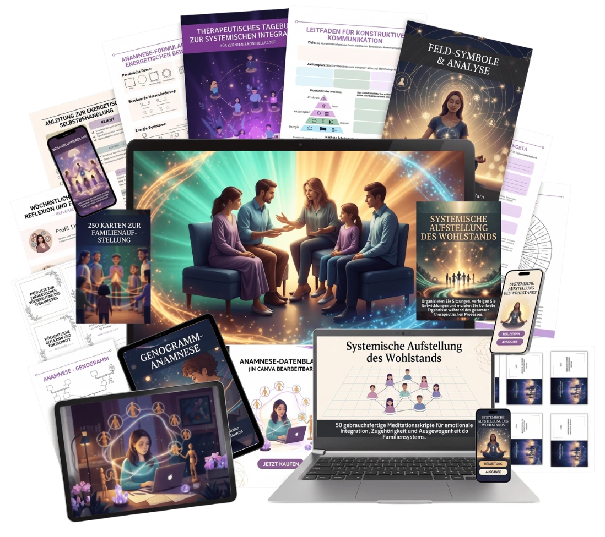
Unser Kit vereint die wichtigsten systemischen, emotionalen und therapeutischen Werkzeuge, damit Sie Ihre Sitzungen mit Klarheit, Sicherheit und echten Ergebnissen leiten – auch wenn Sie gerade erst anfangen.
Ein komplettes Paket fertiger Materialien, speziell entwickelt für Therapeuten, die:
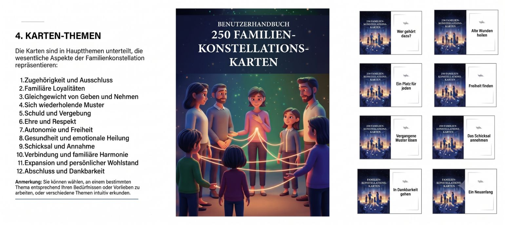
✓ Systemisches Kartenset zur Familienaufstellung (250 Karten) + Anwendungshandbuch – 37 €
Ein Set aus 250 therapeutischen Karten, das verborgene Familienmuster sichtbar macht und emotionale Dynamiken löst – inklusive praktischem Handbuch für den sofortigen Einsatz in der Sitzung.
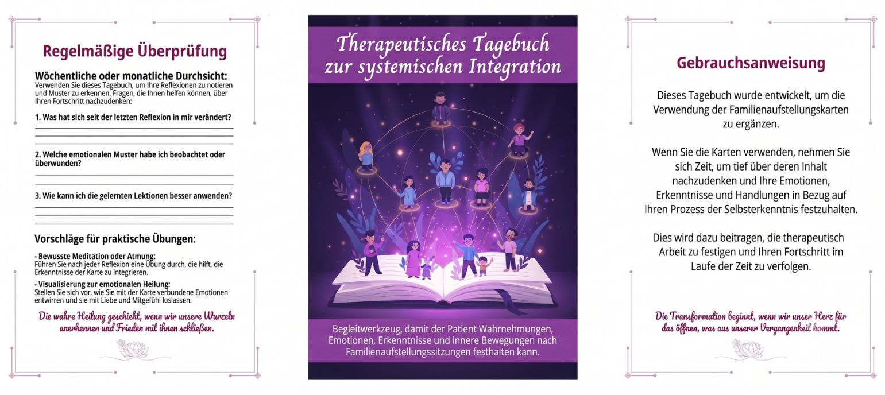
✓ Therapeutisches Tagebuch zur Systemischen Integration – 27 €
Ein Begleitwerkzeug, mit dem der Klient Wahrnehmungen, Emotionen, Erkenntnisse und innere Bewegungen nach den Familienaufstellungs-Sitzungen festhalten kann.
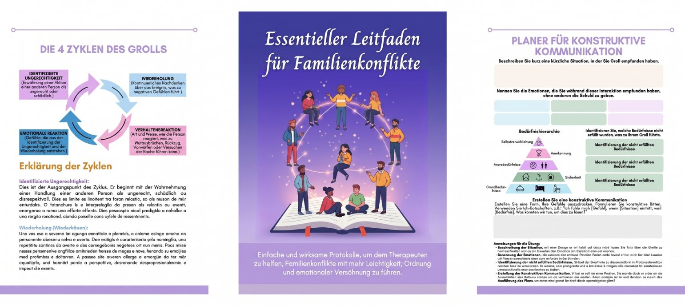
✓ Praxisleitfaden zur Lösung familiärer Konflikte – 37 €
Einfache, wirkungsvolle Protokolle, die Ihnen helfen, familiäre Konflikte leichter, geordneter und mit mehr emotionaler Versöhnung zu begleiten.
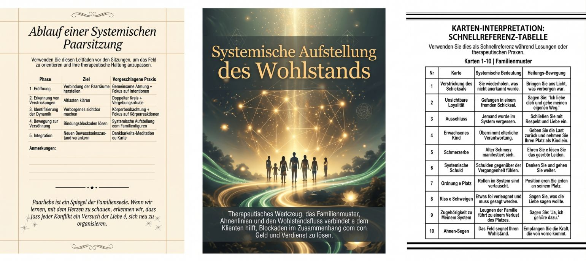
✓ Systemische Aufstellung des Wohlstands + Orakel der Familiären Fülle (50 Karten) – 47 €
Ein therapeutisches Werkzeug, das familiäre Muster, Ahnenlinien und den Fluss des Wohlstands verbindet und dem Klienten hilft, Blockaden rund um Geld und Selbstwert zu lösen.
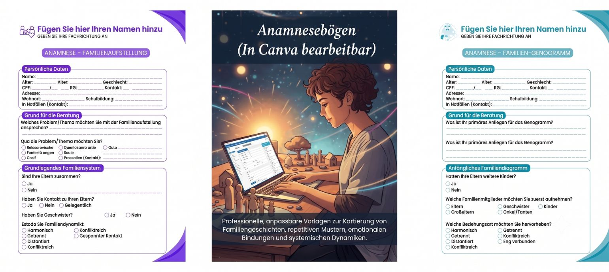
✓ Professionelle Anamnesebögen zur Systemischen Aufstellung (Aufstellung + Genogramm) – bearbeitbar in Canva – 27 €
Individuell anpassbare, professionelle Vorlagen zur Erfassung der Familiengeschichte, wiederkehrender Muster, emotionaler Bindungen und systemischer Dynamiken.
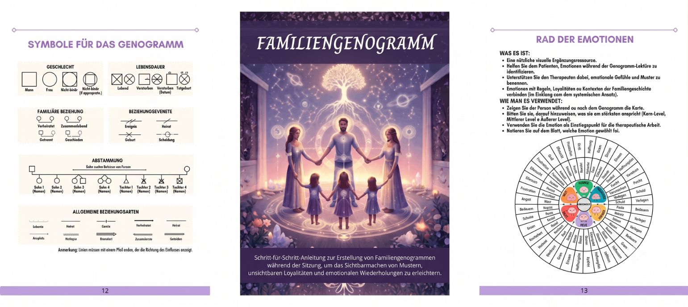
✓ Visueller Leitfaden zum Therapeutischen Genogramm + Karten mit heilenden systemischen Affirmationen – 27 €
Schritt-für-Schritt-Anleitung zur Erstellung von Familien-Genogrammen während der Sitzung – für eine klare Sicht auf Muster, unsichtbare Loyalitäten und emotionale Wiederholungen.
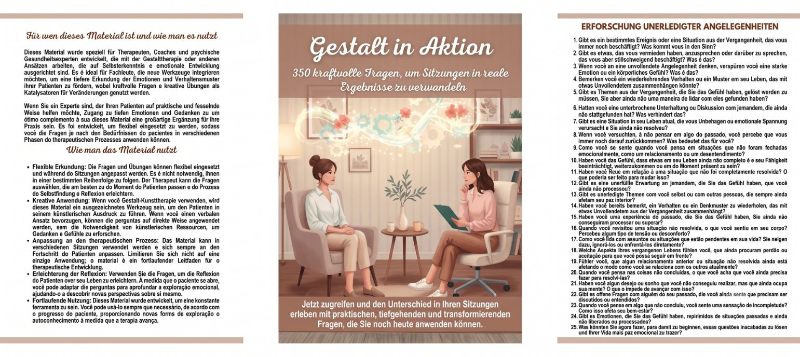
✓ Systemische Gestalt in der Sitzung – 350 Therapeutische Fragen – 47 €
Kraftvolle Fragen, die das Bewusstsein des Klienten erweitern, unterdrückte Emotionen zugänglich machen und unbewusste Bewegungen im Familiensystem sichtbar werden lassen.
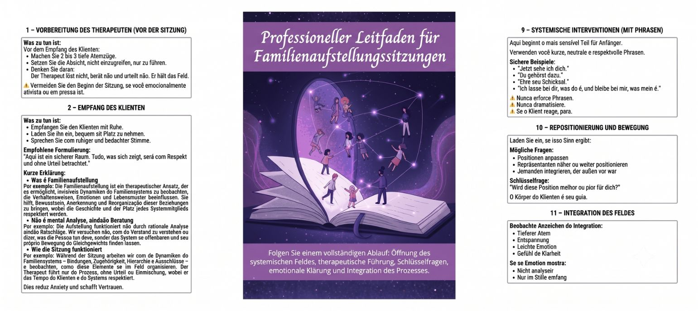
✓ Professioneller Leitfaden für Familienaufstellungs-Sitzungen – 37 €
Folgen Sie einer vollständigen Landkarte: Eröffnung des systemischen Feldes, therapeutische Führung, Schlüsselfragen, emotionaler Abschluss und Integration des Prozesses.
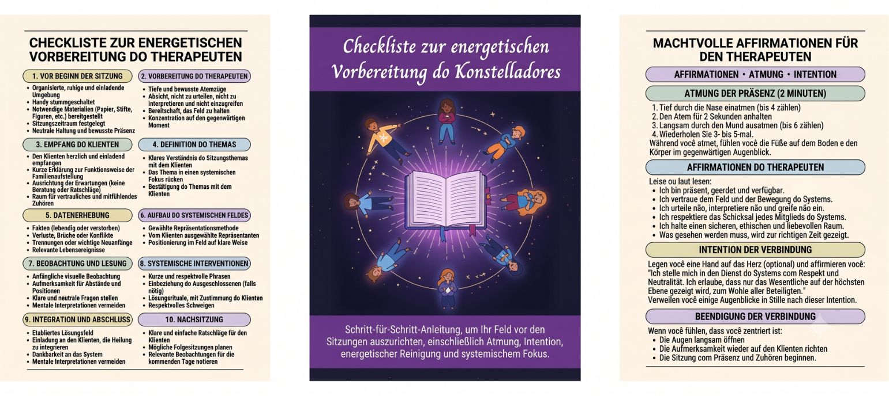
✓ Checkliste zur Energetischen Vorbereitung des Aufstellungsleiters – 17 €
Schritt-für-Schritt-Anleitung, um sich vor jeder Sitzung energetisch auszurichten – mit Atemübungen, Intention, energetischer Reinigung und systemischem Fokus.
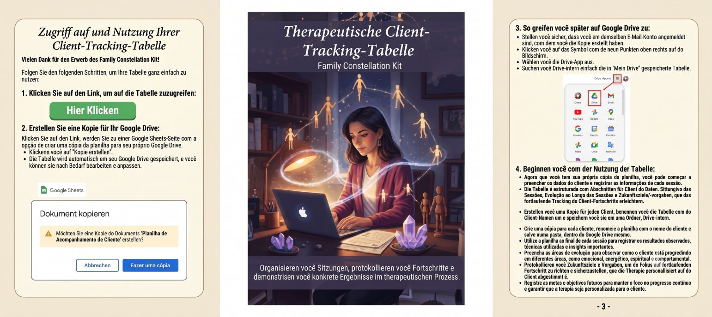
✓ Arbeitsblatt zur Therapeutischen Klientenbegleitung – 17 €
Organisieren Sie Ihre Sitzungen, dokumentieren Sie Fortschritte und zeigen Sie greifbare Ergebnisse im Verlauf des therapeutischen Prozesses.
Wenn Sie sich jetzt Ihr Professionelles Paket zur Familienaufstellung sichern, erhalten Sie zusätzlich 5 kraftvolle Boni:
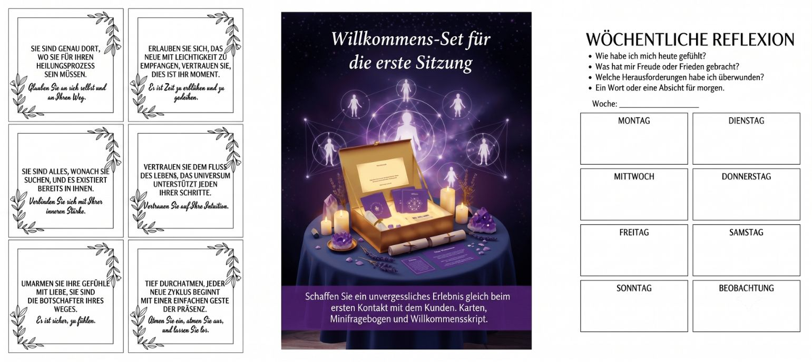
✓ Willkommens-Kit für die Erste Sitzung
Schaffen Sie schon beim ersten Kontakt ein unvergessliches Erlebnis für Ihren Klienten – mit Willkommenskarten, Kurzfragebogen und Begrüßungsleitfaden.
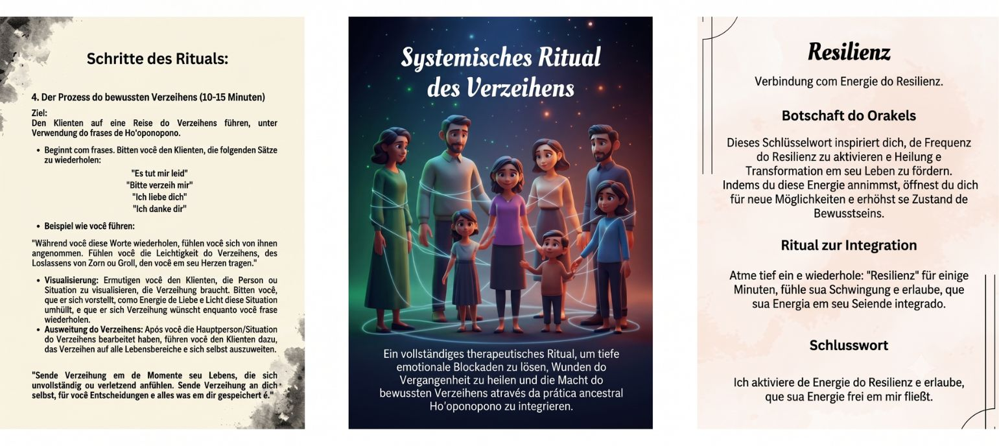
✓ Orakel der Familiären Versöhnung (65 Ho’oponopono-Karten) + Systemisches Vergebungsritual
Therapeutische Karten mit systemischen Botschaften plus praktisches Ritual zur emotionalen Befreiung und familiären Versöhnung.
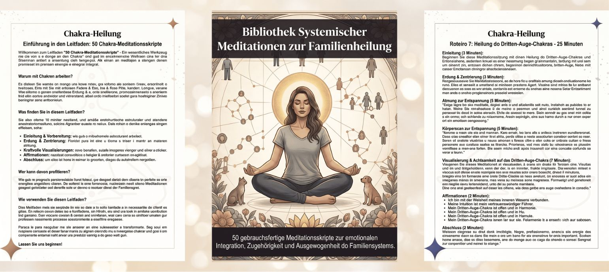
✓ Bibliothek Systemischer Meditationen zur Familiären Heilung
50 fertige Meditationsanleitungen für emotionale Integration, Zugehörigkeit und Gleichgewicht im Familiensystem.
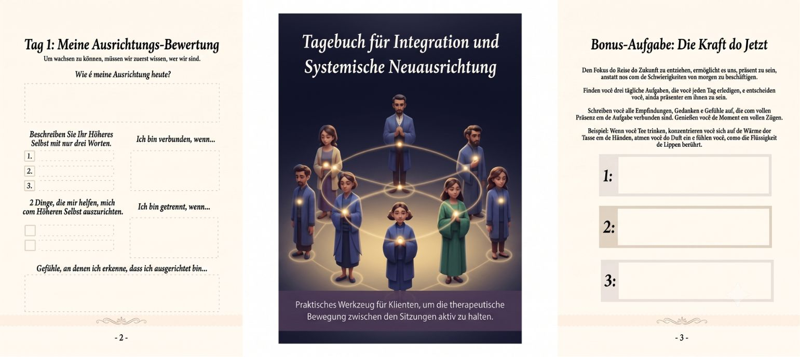
✓ Tagebuch zur Systemischen Integration und Neuausrichtung
Ein praktisches Werkzeug, damit der Klient den therapeutischen Prozess auch zwischen den Sitzungen lebendig hält.
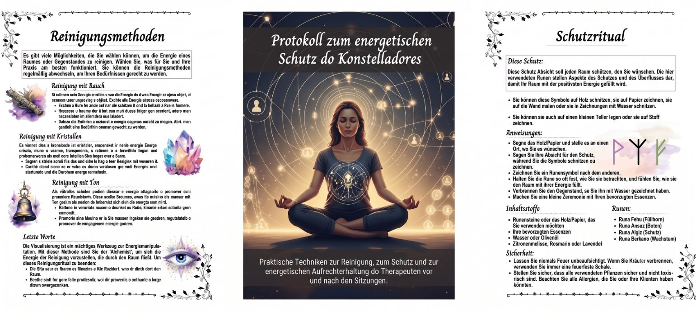
✓ Protokoll zum Energetischen Schutz des Aufstellungsleiters
Praktische Techniken zur energetischen Reinigung, Abschirmung und Stärkung des Therapeuten vor und nach den Sitzungen.
Würden Sie jedes Material einzeln kaufen, würden Sie insgesamt 320 € bezahlen. Doch heute, in diesem Sonderangebot, zahlen Sie nur:
10 €
Einmalzahlung – sofortiger Zugang
Angebot zeitlich begrenzt! Sichern Sie sich noch heute Zugang zu allen Materialien im PDF-Format – bereit zum Download und Ausdrucken.
Testen Sie es ganz ohne Risiko!
Wenn die Werkzeuge Ihre Sitzungen und Ergebnisse nicht spürbar verbessern, erstatten wir Ihnen 100 % Ihrer Investition – unkompliziert und ohne Wenn und Aber.
Der gesamte Inhalt ist 100 % digital (PDFs + bearbeitbares Arbeitsblatt). Sie können ihn herunterladen, ausdrucken oder direkt am Computer, Tablet oder Smartphone nutzen.
Nein. Das Material wurde sowohl für Einsteiger in die Aufstellungsarbeit als auch für holistische Therapeuten entwickelt, die Familienaufstellung praktisch, angeleitet und sicher anwenden möchten.
Ja. Die Leitfäden, Fragen, Karten und Anleitungen wurden entwickelt, um Improvisation überflüssig zu machen und Ihnen zu helfen, Sitzungen von Anfang an klar zu führen.
Ja. Nach Zahlungsbestätigung wird der Zugang automatisch per E-Mail freigeschaltet – zum sofortigen Download.
Ja. Das gesamte Paket wurde für Einzelsitzungen konzipiert und lässt sich zudem in holistische, energetische und systemische Therapien integrieren.
Ja. Die Anamnesebögen (Aufstellung und Genogramm) sind in Canva bearbeitbar – so können Sie Ihr eigenes Logo, Ihre Farben und Ihre visuelle Identität einfügen.
Es ist praxisnah und direkt umsetzbar. Sie können es bereits in Ihrer nächsten Sitzung anwenden, indem Sie den Leitfäden und Schritt-für-Schritt-Anleitungen folgen.
Kein Problem! Sie haben eine bedingungslose 30-Tage-Garantie. Fordern Sie einfach die Rückerstattung an, und Sie erhalten den vollen Betrag zurück.
Nein. Es eignet sich ideal für holistische Therapeuten, Reiki-Praktizierende, systemische und integrative Therapeuten sowie alle Fachleute, die im Bereich Selbsterkenntnis arbeiten.